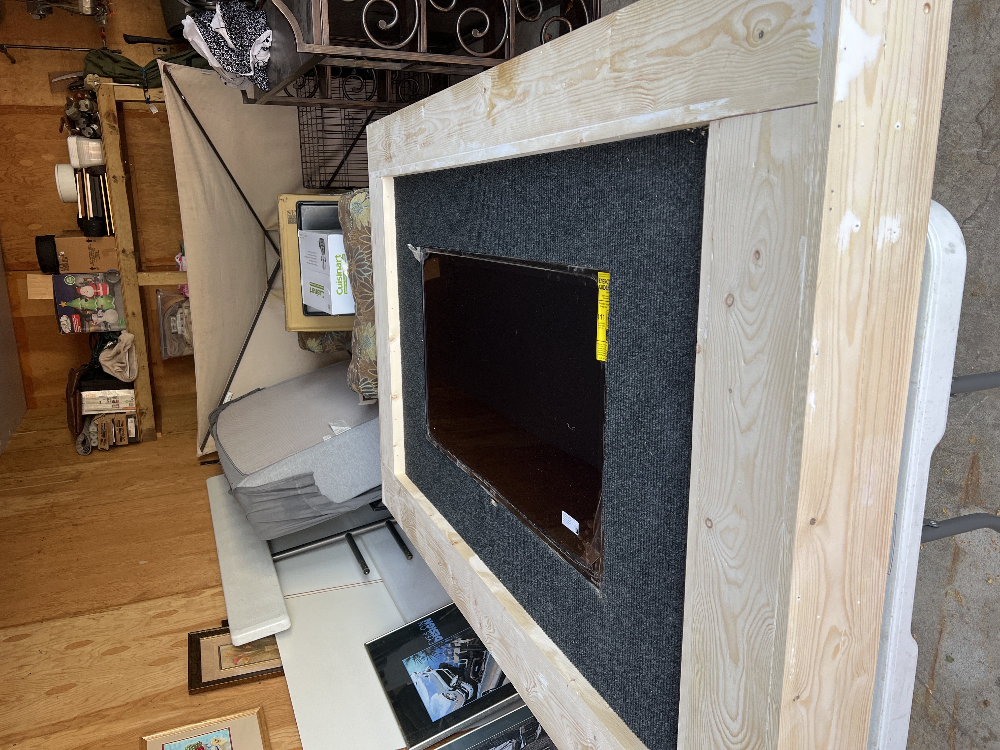
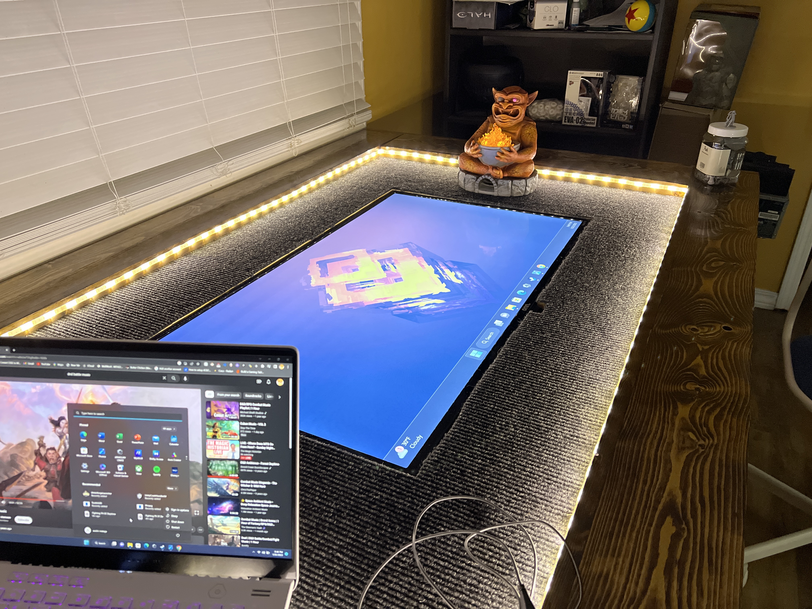

Images from my life

Hi, I'm Austin Malega. I love computers basically since the first time I laid eyes on them.
I don't know when it started but I devolped a huge dnd addiction its one of my favorite things to do I even built a table with a tv in picture below
 My favorite movies are Knives out, Baby driver, and Onward.
| Class | Description | link |
|---|---|---|
| CIS-1420 HTML5 Programming | This course is designed to teach students how to design and code internet web pages using HTML5. Students will learn to create web pages by designing, entering, and testing code using a simple text editor, rather than relying on web development tools | link |
| CIS-1512 Software Engineering | This course covers formal methods and approaches in software development, including SDLC stages, UML modeling, iterative development, testing methods, deployment, metrics, and tool utilization. Emphasis is on practical application, with computer-based assignments required | link |
| CIS-2151 Object-Oriented Program | This course delves into advanced Java programming concepts including exception handling, file I/O, composition, inheritance, polymorphism, abstract classes, interfaces, and advanced GUI design. Computer-based assignments are required both in and out of class | link |
| CIS-2818 Mobile App Dev | This course covers Android handheld app development using Android Studio. It focuses on mobile-specific aspects, with assignments inside and outside of class. | link |
| COM-1290 Interpersonal Communication | This course improves interpersonal communication skills for both personal and professional contexts, covering self-confidence, active listening, language usage, nonverbal communication, assertiveness, group dynamics, and oral presentations | link |